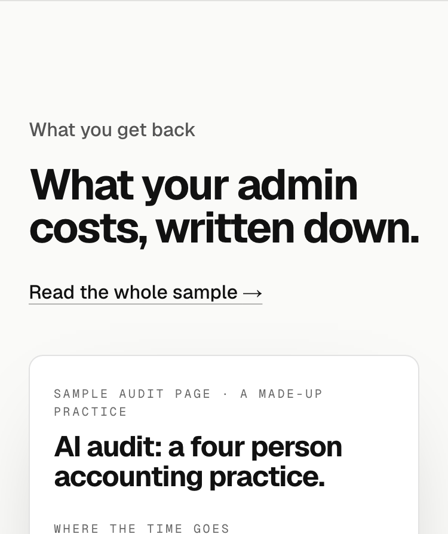
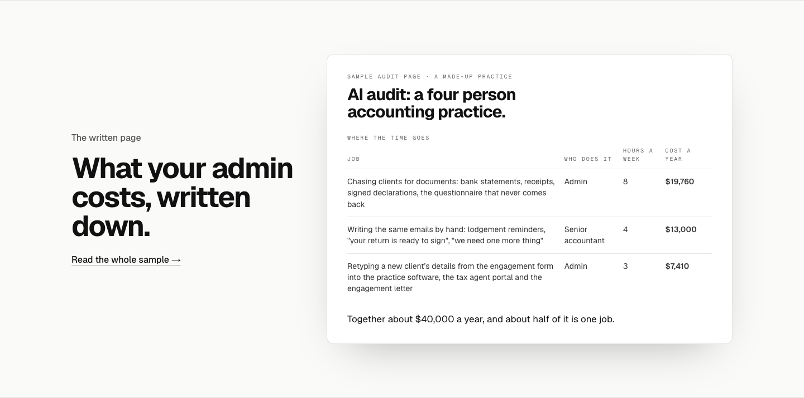
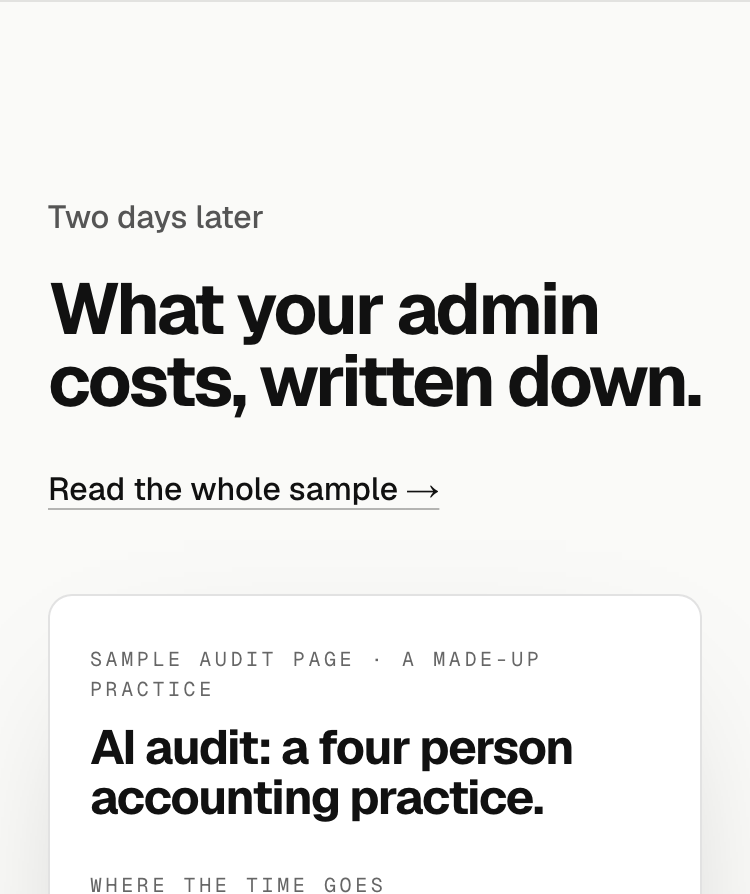

31 labels, numbered. Scored out of 5 as before: Picture, Prove, Only us, Device, Will's shape (a plain name for the thing, like AI Audit and How it works; he trimmed Free AI Audit to AI Audit). The heading under it stays "What your admin costs, written down."
| # | Label | Device | Picture | Prove | Only us | Device | Shape | Score /5 |
|---|---|---|---|---|---|---|---|---|
| 4 | The page you keep | name | 1 | 1 | 1 | 0 | 1 | 4 |
| 2 | The written page | name | 1 | 1 | 0.5 | 0 | 1 | 3.5 |
| 3 | Your written page | name | 1 | 1 | 0.5 | 0 | 1 | 3.5 |
| 5 | Your page to keep | name | 1 | 1 | 1 | 0 | 0.5 | 3.5 |
| 11 | Two days later | time jump | 0.5 | 1 | 0.5 | 1 | 0.5 | 3.5 |
| 6 | Yours to keep | familiar phrase | 0 | 1 | 1 | 0.5 | 0.5 | 3 |
| 7 | What you keep | phrase | 0.5 | 1 | 0.5 | 0.5 | 0.5 | 3 |
| 8 | The audit page | name | 1 | 0.5 | 0.5 | 0 | 1 | 3 |
| 9 | Your audit page | name | 1 | 0.5 | 0.5 | 0 | 1 | 3 |
| 10 | The audit, written up | name | 1 | 1 | 0.5 | 0 | 0.5 | 3 |
| 12 | In two days | time jump | 0.5 | 1 | 0.5 | 0.5 | 0.5 | 3 |
| 15 | On paper | familiar phrase | 1 | 0.5 | 0 | 1 | 0.5 | 3 |
| 1 | What you get back | today | 0.5 | 1 | 0 | 0.5 | 0.5 | 2.5 |
| 14 | What comes back | phrase | 0.5 | 1 | 0 | 0.5 | 0.5 | 2.5 |
| 13 | After the audit | sequence | 0.5 | 0.5 | 0 | 0.5 | 0.5 | 2 |
| 16 | The write-up | name | 1 | 0.5 | 0 | 0 | 0.5 | 2 |
| 17 | Your write-up | name | 1 | 0.5 | 0 | 0 | 0.5 | 2 |
| 18 | Your page | name | 1 | 0.5 | 0 | 0 | 0.5 | 2 |
| 19 | The page | name | 1 | 0.5 | 0 | 0 | 0.5 | 2 |
| 20 | The numbers | name | 0.5 | 0.5 | 0 | 0 | 0.5 | 1.5 |
| 21 | Your numbers | name | 0.5 | 0.5 | 0 | 0 | 0.5 | 1.5 |
| 22 | What the audit finds | phrase | 0.5 | 0.5 | 0 | 0 | 0.5 | 1.5 |
| 23 | The findings | name | 0 | 0.5 | 0 | 0 | 0.5 | 1 |
| 24 | Afterwards | sequence | 0 | 0.5 | 0 | 0 | 0.5 | 1 |
| 25 | No label | none | 0 | 0 | 0 | 0 | 0.5 | 0.5 |


